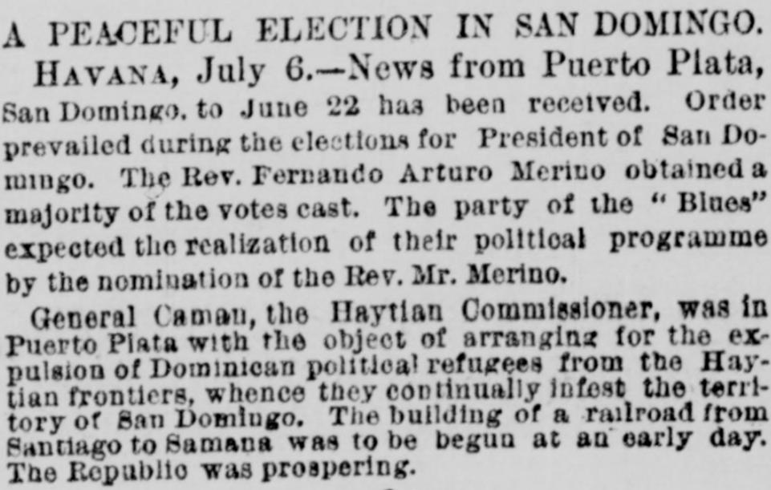
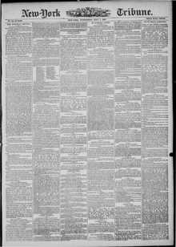

See the full pageVer la página completaGeneral Caman, the Haytian Commissioner, was in Puerto Plata with theEl general Caman, el Comisionado haitiano, se encontraba en Puerto Plata con el
According to the New-York Tribune of July 7, 1880, order prevailed during the San Domingo presidential elections, with the Rev. Ferrando Arturo Merino receiving a majority of the votes. Meanwhile, Haitian Commissioner General Caman was in Puerto Plata to arrange for the expulsion of Dominican political refugees from the Haytian frontiers, and plans were underway to begin building a railroad from Santiago to Samana while the Republic was prospering. Additionally, the newspaper reported on General Sherman's arrival at Winnipeg, Manitoba, where he was met by local officials and greeted with a procession, a nineteen-gun salute, and an infantry reception at the Government House.Según el New-York Tribune del 7 de julio de 1880, reinó absoluto orden durante los comicios presidenciales de Santo Domingo, alcanzando la mayoría del sufragio el presbítero Fernando Arturo de Meriño. Entretanto, el comisionado haitiano general Caman se hallaba en Puerto Plata para convenir la expulsión de asilados políticos dominicanos asentados en la raya fronteriza, prosiguiendo al propio tiempo los proyectos para tender una vía férrea de Santiago a Samaná en momentos de prosperidad para la República. Por añadidura, el diario refirió la llegada del general Sherman a Winnipeg, Manitoba, donde fue agasajado con un desfile, diecinueve salvas de cañón y una guardia de honores en la Casa de Gobierno.
FULL TEXT:TRADUCCIÓN:
A PEACEFUL ELECTION IN SAN DOMINGO.UNA ELECCIÓN PACÍFICA EN SANTO DOMINGO.
HAVANA, July 6.--News from Puerto Plata, San Domingo, to June 22 has been received. Order prevailed during the elections for President of San Domingo. The Rev. Fernando Arturo Merino obtained a majority of the votes cast. The party of the "Blues" expected the realization of their political programme by the nomination of the Rev. Mr. Merino.LA HABANA, 6 de julio.—Noticias de Puerto Plata, Santo Domingo, hasta el 22 de junio han sido recibidas. El orden prevaleció durante las elecciones para Presidente de Santo Domingo. El Reverendo Fernando Arturo Merino obtuvo una mayoría de los votos emitidos. El partido de los «Blues» esperaba la realización de su programa político mediante la nominación del Reverendo Sr. Merino.
General Caman, the Haytian Commissioner, was in Puerto Plata with the object of arranging for the expulsion of Dominican political refugees from the Haytian frontiers, whence they continually infest the territory of San Domingo. The building of a railroad from Santiago to Samana was to be begun at an early day. The Republic was prospering.El general Caman, el Comisionado haitiano, estaba en Puerto Plata con el objeto de arreglar la expulsión de refugiados políticos dominicanos de las fronteras haitianas, desde donde continuamente infestan el territorio de Santo Domingo. La construcción de un ferrocarril desde Santiago a Samaná debía comenzar en fecha temprana. La República estaba prosperando.
New-York Tribune. New York, July 7, 1880.
See the original at the Library of CongressVer el original en la Biblioteca del Congreso
Published by: New York Tribune, 1866-1924.Publicado por: New York Tribune, 1866-1924.
Edition: Edition 1Edición: edición 1
Page: 1Página: 1
Frequency: daily (1866–1924)Frecuencia: diario (1866–1924)
Collection: Chronicling America, Library of CongressColección: Chronicling America, de la Biblioteca del Congreso
LCCN: sn83030214LCCN: sn83030214
ISSN: 1941-0646ISSN: 1941-0646
OCLC: 9405688OCLC: 9405688
Rights: public domain, according to the Library of CongressDerechos: dominio público, según la Biblioteca del Congreso